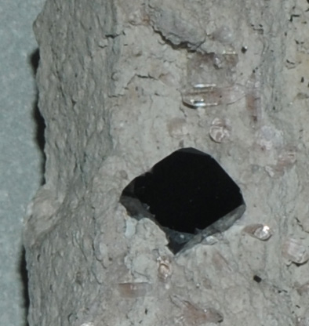

Mn2O3
This sample of bixbyite is displayed in the Smithsonian Museum of Natural History. Bixbyite is an oxide mineral of manganese with the composition Mn2O3 . This sample is about 5x10 cm with small crystals of bixbyite, the largest being about a centimeter across. There are also small topaz crystals embedded in the rock matrix. The sample is and is from Thomas Range, Utah.

A small topaz crystal can be seen in this section along with the bixbyite crystal.
|